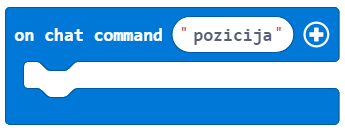

Задача-Засаждане на дървета¶
Събитията са случки, които са резултат от действието на потребителя (натискане на мишката, на бутоните на клавиатурата, влачене и пускане и т.н.). Събитието е причина за реакция. В компютърната наука действие бива засечено (изпълнано) от компютър. Например, натискайки мишката, отваряме приложение, в което при дъжда хората отварят чадърите си. В програмата частта, която се справя със събитието, се активира чрез осъществяването на самото събитие. В MakeCode тези части са блокове, които обикновено започват с думата on:

Ще използваме събитие, за да стимулираме засаждане на дръвчета и ще поясним позицията на героя в света на Minecraft, добавяйки командата position.
Етап 1.
Да помислим за задачата: Героят си взаимодейства със света, движейки се наоколо, например, засаждайки дръвчета. Изпрщането на съобщение (през чата) показва позицията на героя.
Етап 2.
Отворете Code Builder (натискайки C); ще се появи прозорец за редактиране, където ще можете да трупате блокове.
За да започнете чата, да задействате събитие, което ще посочи позицията на героя, трябва да завлечете блока  от категория на работния плот и да въведете думата position в полето за въведение на този блок.
{kind=link}
В този блок трябва да добавим блокове, които ще покажат сегашната ни позиция. За да се покаже, каквото и да е съобщение (т.е.. Моята сегашна позиция е:) трябва да използваме блока  от категория
от категория  .
.
Позицията на героя се запаза в блока  от категория . След като решим да посочим позицията на героя в чата, ще използваме блока
от категория . След като решим да посочим позицията на героя в чата, ще използваме блока  от категория
от категория  . Вместо опция
. Вместо опция position, ще използваме блока в полето:

Нека тестваме тази част от кода чрез копчето  .
.
След като тествами програмата, можем да видим, че нашето намерение се изпълни-щом потребителят натисне копчето Т, отвори чата и въведе съобщението position, позицията на играча в света ще се покаже.


Сега ще създадем събитие за героя, което ще му позволи да засади дръвчета в Minecraft чрез неговото движение. Това ще стане чрез блока  . От падащото му меню ще изберем опцията
. От падащото му меню ще изберем опцията walk:

Последно, ще поставим блока  от категория
от категория  в същия този блок. Ще го използваме за поставим (засадим) дръвче. От падащото меню на блока ще иберем блока, представляващ дърво:
в същия този блок. Ще го използваме за поставим (засадим) дръвче. От падащото меню на блока ще иберем блока, представляващ дърво:

В частта на блока, където трябва да определим позицията на блока, който искаме да поставим в света ни, ще оставим и трите стойности на 0 . Това ще позволина дръвчетата да бъдат засадени на същото място, където се намира героят.
След всички промени, частта от кода за засаждане на дръвчета е представена във фигурата отдолу:

Етап 3.
Тестване на програмата:
Натиснете копчето .

Щом сме тествали програмата, можем да заключим, че тя отговаря на нашите представи-героят засажда дървета, движейки се наоколо.